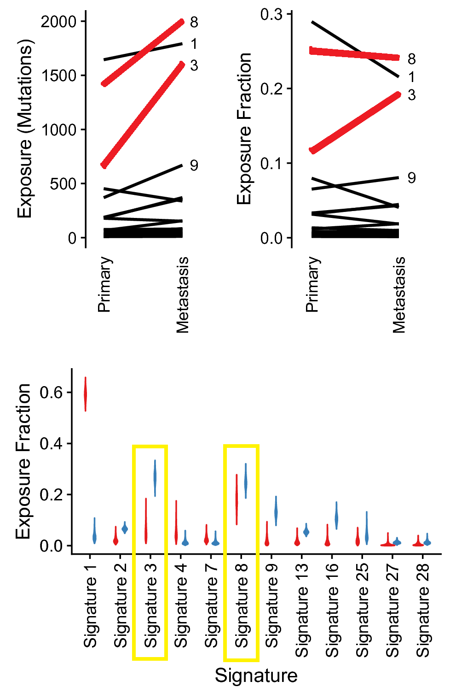

The Burden of Cancer
Leading cause of death in Canada
200 000 diagnoses & 80 000 deaths annually.
Nearly 1 in 2 diagnosed, and 1 in 4 will die of cancer.
Cancer Biology
Rapidly replicating cell populations → tumours
Loss of growth inhibition & specialized functions
Angiogenesis and metastasis as tumours grow
Cancer is a Genetic Disease
A build-up of genetic mutations
Dysregulation of cell division/death pathways
Causes of Mutation
Exogenous

Endogenous
Metabolic Processes
|
DNA Repair Deficiency
|
Mutation Signatures
Mutation signatures are associated with etiologies like age, mutagens, or DNA repair deficiency.

Personalized Oncogenomics


|
Homologous Recombination
|
Summary
- Mutation signatures of HRD may predict response to DNA damaging chemotherapy
Future Directions
- Prospective clinical trial to establish causation
- Explore other drug classes and cancer types
Personalizing Mutation Signature Analysis
Clinical application requires individualized signatures.
Mutation signature methods work on large cohorts.
Analyzing Mutation Signatures of Individual Tumours
 NMF requires a large cohort to infer mutation signatures and is computationally demanding.
NMF requires a large cohort to infer mutation signatures and is computationally demanding.
SignIT Probabilistically Models Individual Signatures
SignIT agrees better with NMF than other methods
SignIT better agrees with NMF.Timing Mutation Signatures
Cancers are constantly evolving.
The genome is a snapshot in time.
SignIT Performs Signature Timing
Testing SignIT in Paired Primary and Metastatic Cancers
Chaffer & Weinberg (2011), Science
SignIT Reconstructs Primary Signatures
| The early signatures (red) resemble the matched primary cancer mutation signatures (C). |
Mutation Signatures Diverge Over Time
| The mutation signatures of metastatic cancers diverge over time from their paired primaries. |
Summary
- SignIT improves the individualized signature analysis and enables temporal dissection.
- Mutation signatures demonstrate evolution between primary and metastatic tumours.
SignIT
Models signatures using Bayesian inference.SignIT improves signature accuracy
Especially in complex models and with noisy dataTiming the HRD Signature
Metastatic Cancer
Metastasis → ~ 90% of cancer-related death.
Most data comes from primary cancers.
Limited Mutation Signature Research in Metastatic Cancers
|
Mutation processes change over time. Yet they are understudied in metastases. |
Novel Mutation Signatures
|
484 cancers. 12 types. 20 signatures. 9 "novel". |
Timing of Mutation Signatures
Signature of Platinum Exposure
Signatures of platinum exposure(Boot et al. 2018, Genome Res.)
Signature of Platinum Exposure
BRCA Reversion → Platinum Resistance
- BRCA mutation -/- → platinum sensitivity
- BRCA reversion -/- → platinum resistance
HRD Reversion and Drug Resistance
- ↑ HRD activity -/- → platinum sensitivity
- ↓ HRD activity -/- → platinum resistance
HRD Signature Dynamics
Summary
- Metastatic mutation signatures reveal potential mechanisms of drug exposure and resistance
Future Directions
- Genotype-exposure interactions
- In vitro assays of oxaliplatin exposure
Mutation Signature Analysis
|
570 cancers NMF successful in 12 cancer types Clustered into 20 distinct signatures |
Research Question
What are the clinical implications of genomic instability and its temporal evolution in metastatic cancer?
Conclusions
Mutational processes (and their temporal evolution) are an emerging area for cancer biomarker development.
Jones Lab
Steve Jones
Erin Pleasance
Yaoqing Shen
Jake Lever
Jasleen Grewal
Pinaki Bose
Daryanaz Dargahi
Katayoon Kasaian
My Linh Thibodeau
Celia Siu
Santina Lin
Luka Culibrk
Jenny Yang
Tariq Vira
Jahanshah Ashkani
Neelam Memon
Cameron Grisdale
Andrew Ponomarev
Zoltan Bozoky
Brad Davis
Sreeja Leelakumari
Mhairi Sigrist
Brenda Koster
Committee
Marco Marra
Inanc Birol
Stephen Yip
Christian Steidl
POG Clinical/Pathology
Hui-li Wong
Daniel Renouf
Brandon Sheffield
David Shaeffer
Joanna Karasinka
Sophie Sun
Tamara Shenkier
Diego Villa
Caroline Lohrisch
Stephen Chia
Wendie Den Brok
Sheridan Wilson
Solomon Bandt
Tony Ng
Xiaolan Feng
Rod Rassekh
Rebecca Deyell
Howard Lim
Karen Gelmon
Janessa Laskin
POG Analysts
Martin Jones
Laura Williamson
Elisa Majounie
Caralyn Reisle
Melika Bonakdar
Simon Chan
Greg Taylor
Sequencing & Bioinformatics
Carolyn Ch’ng
Caralyn Reisle
Yussanne Ma
Hillary Pearson
Dustin Bleile
Karen Mungall
Richard Corbett
Martin Krzywinski
Nina Thiessen
Andy Mungall
Yongjun Zhao
Richard Moore
Jacqueline Shein
Ethics/Germline
Kasmintan Schrader
Aly Karsan
Sean Young
Ian Bosdet
Projects Team
Jessica Nelson
Katherine Mui
Payal Simpahimalani
Alexandra Fok
Robyn Roscoe